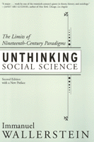

A classic in sociological thought—now back in print!
A classic in sociological thought—now back in print!


 A classic in sociological thought—now back in print!
A classic in sociological thought—now back in print!

|  |
Unthinking Social ScienceThe Limits of Nineteenth-Century ParadigmsSecond Edition, with a New PrefaceImmanuel Wallersteinpaper EAN: 978-1-56639-899-2 (ISBN: 1-56639-899-1) |
"Wallerstein is always readable, often persuasive and occasionally profound. He is a genuine scholar, with far fewer affectations than academics of his distinction usually acquire, and he never patronizes us... [B]y applying world-systems theory so broadly, to so many topics, these essays add considerably to its power."
—Michael Mann, The British Journal of Sociology
In this, new edition of a classic work—now with a new preface—on the roots of social scientific thinking, Immanuel Wallerstein develops a thorough-going critique of the legacy of nineteenth-century social science for social thought in the new millennium. We have to "unthink"—radically revise and discard—many of the presumptions that still remain the foundation of dominant perspectives today. Once considered liberating, these notions are now barriers to a clear understanding of our social world. They include, for example, ideas built into the concept of "development." In place of such a notion, Wallerstein stresses transformations in time and space. Geography and chronology should not be regarded as external influences upon social transformations but crucial to what such transformation actually is. Unthinking Social Science applies the ideas thus elaborated to a variety of theoretical areas and historical problems. Wallerstein also offers a critical discussion of the key figures whose ideas have influenced the position he formulates—including Karl Marx and Fernand Braudel, among others. In the concluding sections of the book, Wallerstein demonstrates how these new insights lead to a revision of world-systems analysis.
Excerpt available at www.temple.edu/tempress
"Wallerstein�s influence on macro historical sociology has been invaluable. The twin challenge in his work is that we should view social phenomena in the broadest possible terms and should do so preserving a commitment to substantive rationality and the promotion of social change."
—David Jary, Sociology
"The important subject [of this book] is the nature of the knowledge we generate...Wallerstein argues that the paradigms we work through with their associated agendas, frameworks, and debates have become fundamental restraints on understanding our social world. They are a legacy of the nineteenth century, and it is time for them to be replaced. Hence, Wallerstein is not a revisionist; rather than 'rethink,' he believes we must 'unthink' the paradigms that fetter both our thought and practice. That is what Wallerstein's world-systems analysis is all about—it is not a theory about the social world, but a 'protest' against how social scientific inquiry is structured...Wallerstein relocates epistemology at the center of our critical concerns for society."
—Annals of the Association of American Geographers
"[Unthinking Social Science] presents a clear thesis: Wallerstein uses a world-historical argument tying the emergence of 'modern' ideologies and social sciences to eighteenth- and nineteenth-century world-system dynamics, debunks them, and calls for their reformulation."
—David A. Smith, Contemporary Sociology
"A major...work by one of the twentieth century's giants in theory, history, and sociology."
—Janet Abu-Lughod, author of New York, Chicago, Los Angeles
Preface to the Second Edition
Acknowledgments
Introduction: Why Unthink?
Part I: The Social Sciences: From Genesis to Bifurcation
1. The French Revolution as a World-Historical Event
2. Crises: The World-Economy, the Movements, and the Ideologies
Part II: The Concept of Development
3. The Industrial Revolution: Cui Bono?
4. Economic Theories and Historical Disparities of Development
5. Societal Development, or Development of the World-System?
6. The Myrdal Legacy: Racism and Underdevelopment as Dilemmas
7. Development: Lodestar or Illusion?
Part III: Concepts of Time and Space
8. A Comment on Epistemology: What is Africa?
9. Does India Exist?
10. The Inventions of TimeSpace Realities: Towards an Understanding of our Historical Systems
Part IV: Revisiting Marx
11. Marx and Underdevelopment
12. Marxisms as Utopias: Evolving Ideologies
Part V: Revisiting Braudel
13. Fernand Braudel, Historian, "homme de la conjoncture"
14. Capitalism: The Enemy of the Market?
15. Braudel on Capitalism, or Everything Upside Down
16. Beyond Annales?
Part VI: World-Systems Analysis as Unthinking
17. Historical Systems as Complex Systems
18. Call for a Debate about the Paradigm
19. A Theory of Economic History in Place of Economic Theory?
20. World-Systems Analysis: The Second Phase
References
Index
 | Immanuel Wallerstein is the Director of the Fernand Braudel Center for the Study of Economies, Historical Systems and Civilizations at the State University of New York at Binghamton, where he is also an emeritus Distinguished Professor of Sociology. He is currently a research sociologist at Yale University. |
Sociology
Political Science and Public Policy
History
© 2015 Temple University. All Rights Reserved. This page: http://www.temple.edu/tempress/titles/1607_reg.html.